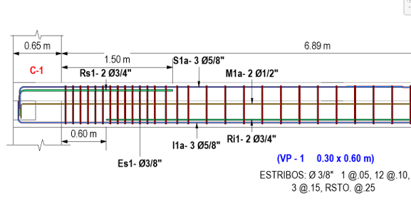
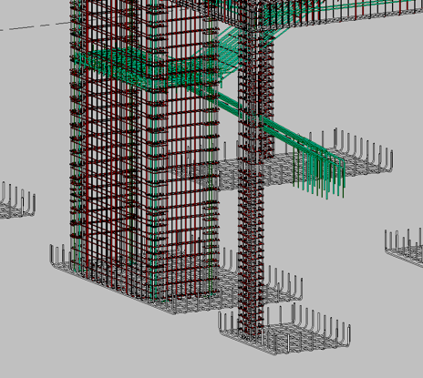
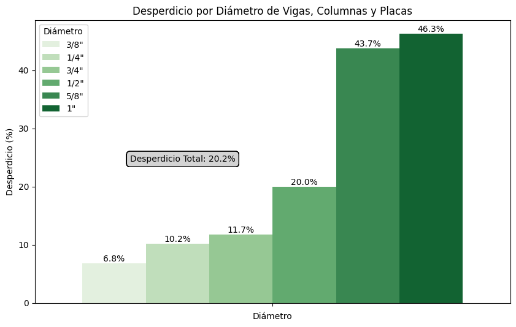

Ingeniero Civil apasionado por la tecnología y la mejora de procesos. Experiencia en la gestión de proyectos con BIM y uso de técnicas de Análitica y Visualización de Datos en las áreas de ingeniería y oficina técnica.
HABILIDADES
60%
80%
80%
90%
PROYECTOS
📊 Optimización del Cálculo de Desperdicio de Acero en Modelos BIM
En la construcción, las varillas de acero corrugado son elementos longitudinales de sección circular y diámetros diversos. Son utilizadas como elementos
de refuerzo de elementos de concreto armado. Estas siguen criterios normativos que garantizan el correcto compartamiento estructural del elmento,
lo cual deriva en varillas de longitudes y formas específicas, como se muestra en la Figura 1.

Figura 1: Distribución de Acero en Columna
En el sector construcción las varillas son vendidas por peso, comunmente expresado en toneladas y en longitudes de 9 metros. Esta última condición comercial genera un cantidad desperdiciada al tener cortes de menor longitud. Lo mencionado es expresado bajo la siguiente ecuación:
\[
\text{Desperdicio} = \left( \frac{\text{Metrado de Pedido (Varillas Comerciales en Kg)}}{\text{Metrado Teórico (Varillas Según Diseño en Kg)}} - 1 \right) \times 100
\]
Actualmente, el sector hace uso de dos forma de cuantificación para los Metrados Teóricos de Acero. Una se basa en un enfoque tradicional
, en el cual se miden longitudes de plano de forma manual y se suman en base a criterios específicos para así, una vez convertidos a unidades de peso,
obtener un Metrado Teórico o de plano. La otra toma un enfoque más innovador y hace uso de modelos digitales, conocidos como modelos de información (BIM),
en los que el acero es modelado en un entorno digital en base a sus propiedades físicas y a su geometría. Si bien este último escenario facilita el cálculo
de la cantidad de acero (Metrado) no brinda directamente un resultado del desperdicio pues no permite un cálculo rápido de la cantidad de cortes en una varilla
comercial.
Por otro lado, en la práctica, los cortes en las varillas de acero comerciales y el uso de piezas sobrantes para reducir el desperdicio, es comunmente resuelto
por la mano de obra encargada del trabajo, es decir maestros de obra y capataces, teniendo en cuenta diversos criterios constructivos. Estos no son el objetivo
principal del proyecto y por tanto, no serán discutidos, mas si tomados en cuenta en el proceso.

Figura 2: Modelo BIM Acero
Objetivos
Crear un flujo que permita calcular el desperdicio de acero a partir de un modelo de información BIM de una edificación de 3 pisos, 1 sótano y cimentación.
Se analizan los siguientes elementos estructurales:
Placas (Muros de Concreto Armado)
Columnas
Vigas
Para lograrlo se toma en cuenta:
La data base será obtenida de un modelo BIM creado en Revit y exportada en formato CSV.
El procesamiento de datos ser hará con python haciendo uso de la libería pandas.
Se definirá una función de agrupamiento que permita unir las longitudes mayores con las longitudes menores, de forma tal que la suma sea la más cercana
a los 9 metros comerciales.
Se asumirá que los aceros podrán ser usados entre los tres elementos.
Abordamiento del Problema
Como punto inicial, es importante establecer la estructura de la data a exportar del modelo BIM. Esto se expresa como
las columnas y el tipo de datos en cada una.
Elemento: Texto / Nombre del elemento, viga, columna, placa, otros.
Tipo: Texto / Código del elemento, código de viga u otro.
Diámetro: Texto / Tamaño de la varilla expresado en unidad de pulgadas fraccionarias. Se toma como texto.
Longitud de barra (m): Número decimal / Longitud de las varillas según diseño o plano expresada en metros.
Peso de acero (kg/m): Número decimal / Propiedad del acero, peso por unidad de longitud en función del diámetro.
De acuerdo al criterio de desperdicio, el agrupamiento debe realizarse por cada Diámetro y en función de las Longitudes de Barra paran obtener la cantidad
de Varillas Comerciales necesarias.
El Elemento, así como el Tipo no serán considerados en el agrupamiento ya que el supuesto base es la utilización de piezas en cualquier elemento estructural.
El Metrado Teórico será tomado a partir de un modelo BIM base, el cual corresponde a una versión sin modificaciones por criterios constructivos, esta será
la línea base para el cálculo del desperdicio. Por otro lado, la cantidad de Varillas Comerciales será calculada a partir de un modelo BIM con modificaciones
por criterios constructivos. Este enfoque permite asegurar que el desperdicio sea un indicador confiable al tomar un punto fijo como comparación.
Resultados
Del agrupamiento realizado, se obtienen desperdicios por diámetro para el proyecto analizado. Estos se expresan en unidades de venta, es decir, kilogramos.
Así se obtiene lo expresado en la Figura 3.

Al crear un flujo de cálculo y contar con una línea base, es posible determinar el impacto en el desperdicio en base a las iteraciones por criterios constructivos
a desarrollar así como a cambios en la ingeniería (Cambio en planos de acero).
📅 Limpieza de Cronograma para Simulación
Descripción del Problema
Errores en los datos del cronograma inicial.
Objetivos
Optimizar el cronograma de simulación para reducir inconsistencias...
Abordamiento del Problema
Reorganización de las actividades y ajuste de tiempos.